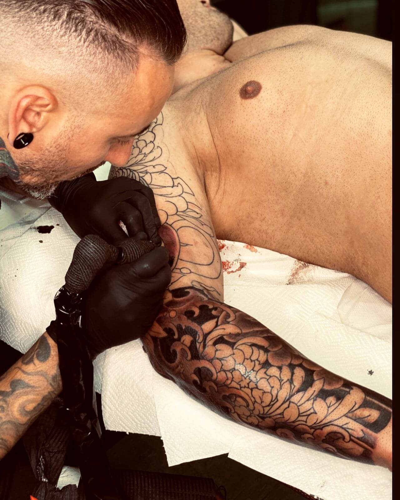
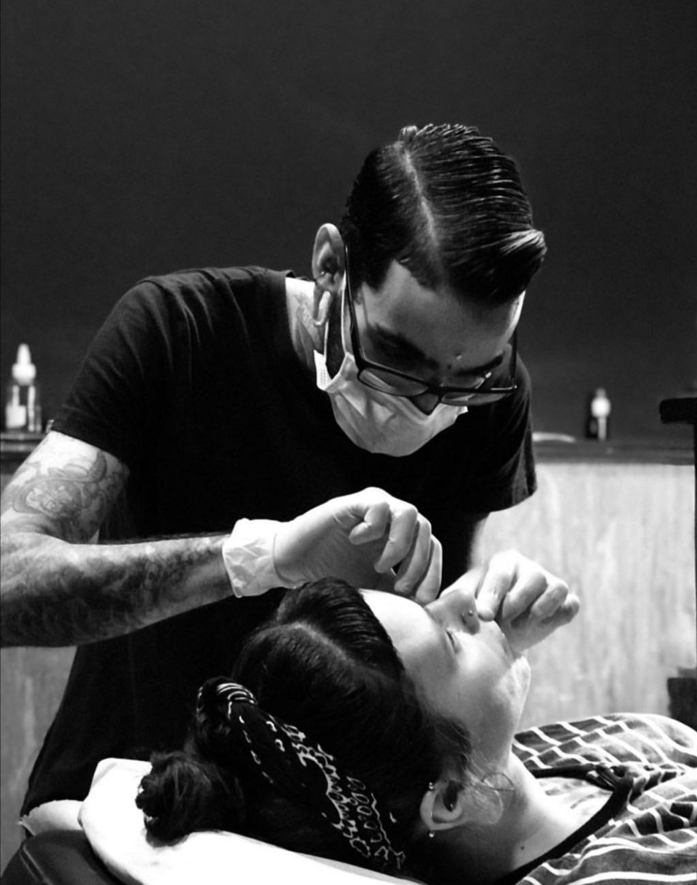
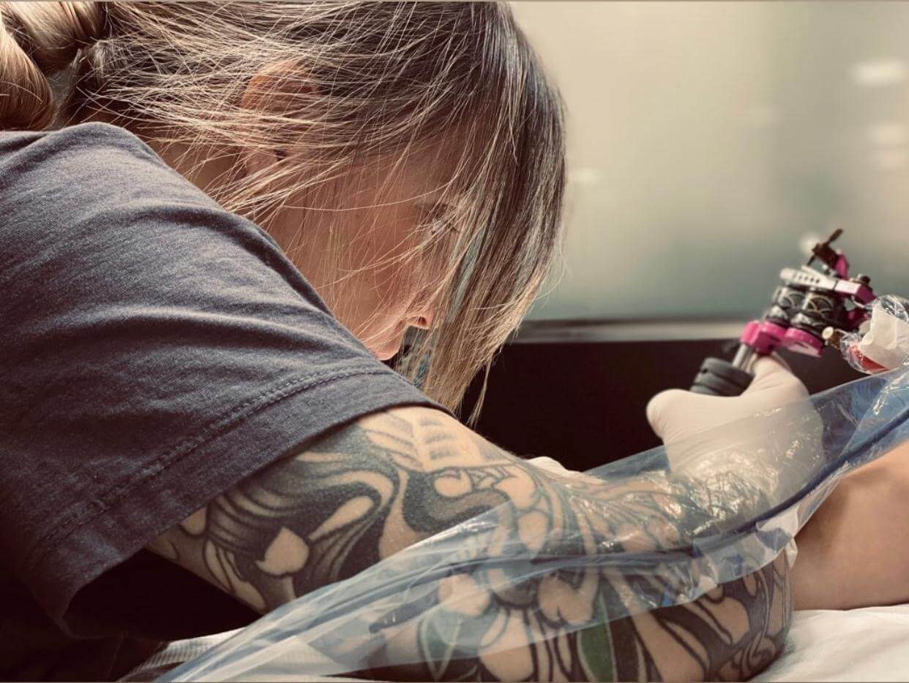

NUESTROS ARTISTAS
ARTURO MENDEZ
Tatuador/CEO
Nacido en Rosario, Argentina, comenzó su andadura como Tatuador profesional por los años 90 en su ciudad natal después de llevar varios años tatuando y practicando con amigos, familiares y aprendiendo poco a poco. En 2001 decide viajar a las islas Canarias, y empieza a trabajar en CANARY TATTOO, donde tiene la posibilidad de viajar y conocer nuevas tendencias y grandes artistas. Ya en 2006 decide abrir su propio estudio y así nace HOLY KOI TATTOO creado con mucho esfuerzo y dedicación
BORJA SANTANA
Body Piercer
Borja Santana comienza su trayectoria profesional en 2011 en un pequeño estudio en el sur de Gran Canaria. Desde entonces ha trabajado en varios centros hasta establecerse en 2015 en uno de los estudios con mayor nombre en Canarias: Holy Koi Tattoo. A partir de ese momento se ha centrado en un aprendizaje continuo para ofrecer perforaciones sólo con los más altos estándares de calidad e higiene y una visión diferente de la joyería corporal.
NACARY GONZALEZ
Tatuadora
Nácary habiendo estudiado diplomatura de turismo, es consciente de que su camino no es ese y decide en 2016 aventurarse en el mundo del tatuaje tras haber sido clienta, amiga y recepcionista en Holykoi tattoo. Con el apoyo de todo el equipo, aprende a buen ritmo y descubre un mundo fascinante que le apasiona. Es así como se convierte en @nacarygonzalez_tattoo, una artista que disfruta mucho haciendo dotwork y tatuajes minimalistas.